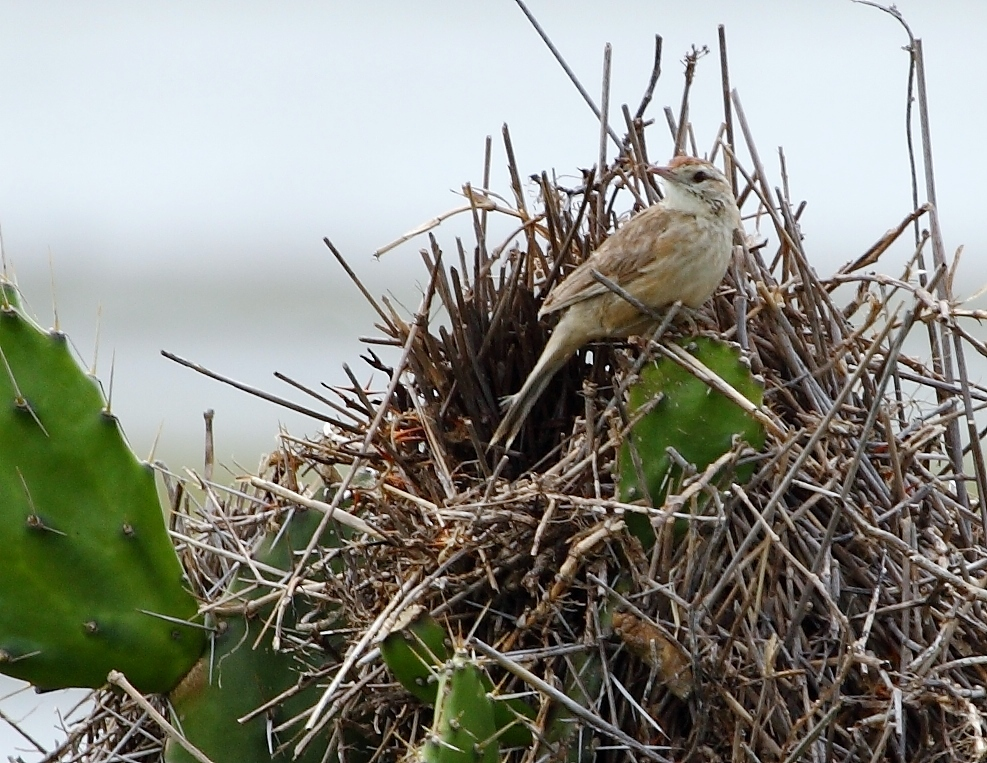

Lula.
diario de la mañana — el mundo, tu ciudad y lo que te asombra
Buen día, viernes. Vuelve el calor: 19° a 31°, parcialmente nublado y sin lluvia, y el fin de semana sube a 33° el sábado y 34° el domingo. Hoy la ciencia es de biología de la reproducción —por qué el óvulo envejece de una manera que el espermatozoide no—, y la música es tango: Pugliese y «La yumba». Esta noche, además, juega Estudiantes la final de la Libertadores.
- El mundo en cinco minutos3'
- Argentina y Buenos Aires2'
- Ciencia: por qué envejece el óvulo5'
- Mirá a tu alrededor2'
- Receta de estación2'
- La palabra del día1'
- Le français du matin2'
- English corner3'
- Viernes de música: Pugliese4'
- Hoy en la historia · un lugar2'
- Lo que me asombra hoy1'
- Pasatiempo: sudoku medio12'
- Cuaderno: repaso, quiz y escritura4'
Afganistán: los talibanes ordenan borrar los nombres de las mujeres de los documentos oficiales
La orden que trascendió ayer es que en los documentos oficiales afganos el nombre de una mujer sea reemplazado por el de su tutor masculino: en vez de su nombre, «hija de» o «esposa de». Es la continuación de una serie que ya venía: prohibición de la escuela secundaria y la universidad para mujeres, del trabajo en casi todos los rubros, de salir sin acompañante, de que se oiga su voz en público en algunos contextos.
Lo que vuelve a esta medida distinta de las anteriores es que no regula una conducta: elimina una identidad administrativa. Sin nombre propio en un documento no hay cómo registrar una propiedad, abrir una cuenta, denunciar, heredar ni acreditar quién sos ante nadie. En términos prácticos es la supresión de la personalidad jurídica de la mitad de la población. Viene justo dos días después del 25 de noviembre, lo que da la medida de cuán desparejo es el mapa del que hablábamos el miércoles.
Las otras de ayer
En la Unión Europea, los recortes presupuestarios dividen al bloque y Alemania puso condiciones para aprobar el presupuesto. En España hubo último debate antes de las elecciones, con cruces fuertes entre Sánchez, Abascal, Feijóo y Colau. Y la canciller de Finlandia estuvo en Buenos Aires, donde respaldó al gobierno y dejó una advertencia sobre Rusia.
El Senado dio media sanción a suspender las PASO de 2027
Con 43 votos, el Senado aprobó ayer y giró a Diputados la suspensión de las PASO para 2027. Las PASO son las Primarias Abiertas, Simultáneas y Obligatorias: una elección previa, con el padrón completo, en la que cada frente define sus candidatos y en la que además se mide quién supera el piso para competir. «Media sanción» quiere decir que pasó una sola de las dos cámaras: todavía falta Diputados para que sea ley.
El argumento oficial es el costo y la simplificación; el argumento en contra es que sin primarias la definición de candidaturas vuelve a las mesas chicas de cada partido. Vale notar que las PASO se suspendieron también en otros años: se votaron en 2011, 2013, 2015, 2017, 2019, 2021, 2023 y 2025, y no se hicieron en 2009 ni en 2020 por la pandemia.
En lo económico, ayer circuló un informe del J.P. Morgan con una mirada pesimista —estancamiento, caída de reservas y una elección «cerrada y polarizada»— y se recordó la caída del 0,6 % del PBI en el segundo trimestre. Y el fondo Burford presentó otro reclamo millonario contra la Argentina ante el CIADI, el tribunal arbitral del Banco Mundial.
Por qué el óvulo envejece: el pegamento que se pone antes de nacer y no se repone
Un aviso de método antes de empezar: el paper grande de esta semana —uno sobre neuronas «generalistas» en el cerebro del ratón— no pude verificarlo bien, no conseguí el DOI confirmado, y prefiero no citarte algo a medias. Así que hoy te traigo otro, de este año, que explica algo que vas a necesitar entender sí o sí: «A versatile cohesion manipulation system probes female reproductive age-related egg aneuploidy», Nature Aging, DOI 10.1038/s43587-025-00997-w.
El anclaje: qué es la cohesina y por qué importa acá
La cohesina es un complejo proteico con forma de anillo que abraza las dos cromátidas hermanas de un cromosoma y las mantiene pegadas hasta que llega el momento de separarlas. Sin ese abrazo, las cromátidas se sueltan antes de tiempo y el huso mitótico las reparte mal: una célula se lleva de más y la otra de menos. A eso se lo llama aneuploidía —número cromosómico incorrecto— y en el óvulo humano es la causa principal de aborto espontáneo temprano y de trisomías.
Ahora, el dato que lo cambia todo. En la ovogénesis humana, la cohesina de la meiosis —con subunidades específicas como REC8 y SMC1β, distintas de las de la mitosis— se carga sobre los cromosomas durante la vida fetal, antes de que la mujer nazca, y después los ovocitos quedan detenidos en profase I durante décadas. Y acá está el problema: esa cohesina meiótica no se repone. Todo lo que hay es lo que se puso antes de nacer. Un ovocito que se ovula a los 38 años viene sosteniendo sus cromosomas con anillos puestos hace 38 años más los meses de gestación.
Qué hizo el trabajo
En vez de esperar a que los ratones envejezcan y comparar, construyeron un sistema para degradar REC8 a voluntad en ovocitos vivos, con una droga —la estrategia de los sistemas tipo degron: se le pega a la proteína una etiqueta que, al agregar el compuesto, la manda a destruir—. Eso permite sacar cohesina de a poco y medir qué pasa en cada nivel, algo que el envejecimiento natural no deja hacer porque no se puede graduar.
Dos resultados. Uno: hay un umbral. La pérdida de cohesión no produce errores de manera proporcional; por encima de cierto nivel de cohesina el ovocito se las arregla, y por debajo los errores se disparan. Dos: el daño no actúa solo. Aparecen defectos en el citoesqueleto de actina y en la protección del centrómero que amplifican la aneuploidía: no es que falte pegamento y nada más, es que la falta de pegamento desorganiza otras cosas que a su vez empeoran el reparto.
Cómo leerlo con criterio
Dos cautelas, y una vale para toda la literatura del tema. Una: esto es ratón, y la degradación aguda con una droga no es lo mismo que una pérdida lenta a lo largo de décadas: el sistema prueba si la falta de cohesina alcanza para causar el fenómeno, no que sea la única causa del envejecimiento ovocitario humano. Dos: en humanos la evidencia directa de que la cohesina unida a los cromosomas cae con la edad sigue siendo limitada —hay trabajos, pero conseguir ovocitos humanos de distintas edades es dificilísimo—, así que buena parte del modelo se sostiene sobre ratón. Que la hipótesis sea elegante y ajuste bien no la convierte en demostrada.
Biotec argentina · Laboratorios Pablo Cassará
Del lado local: Laboratorio Pablo Cassará, fundado en 1950, con planta biotecnológica en Mataderos —comprada en 1996— y otra en Villa Lugano. Produce interferón alfa 2a y 2b recombinantes, biosimilares, y tiene líneas de vacunas virales e ingeniería de tejidos. Su participación más conocida es la vacuna contra el Covid ARVAC Cecilia Grierson, desarrollada junto con la UNSAM y el CONICET: el primer desarrollo de vacuna argentino que llegó a aprobación. Aviso honesto: casi todo lo que se encuentra sobre su I+D es material de la propia empresa o de su fundación, y una base internacional de la Universidad de Purdue marca un «Left NME R&D (2019)» que no coincide con esa actividad; si te interesa, chequealo en ANMAT.
La palmera canaria, que no tiene tronco, y el leñatero
El árbol: palmera canaria
Phoenix canariensis, la de Plaza San Martín, las Barrancas de Belgrano y medio Palermo. Es una monocotiledónea, y eso cambia todo lo que uno cree saber de un árbol. No tiene cámbium, la capa que en un árbol común agrega madera nueva año tras año: por eso una palmera no engrosa con la edad y no tiene anillos de crecimiento. Lo que parece tronco es un estipe, un tallo de haces vasculares dispersos en un tejido de base, sin corteza verdadera; lo que ves en la superficie son las cicatrices de las hojas viejas.
Y de ahí sale lo más importante: toda la palmera crece desde una sola yema apical, arriba de todo, en el centro del penacho. Si esa yema se daña, la palmera no rebrota y muere entera —no tiene yemas laterales de repuesto como un sauce—. Eso es exactamente lo que explota el picudo rojo (Rhynchophorus ferrugineus), el gorgojo que arrasó palmerales en Europa y está en la región: la larva come justamente ahí. También es el motivo por el que el «palmito» es un corazón de palmera, y por el que cosecharlo mata a la planta.
El ave: leñatero

Anumbius annumbi, también llamado espinero. Pardo, discreto, de la misma familia que el hornero —los furnáridos, los «albañiles»— pero con otra técnica: en vez de barro, palitos. Arma un nido enorme, de hasta un metro, una bola de ramitas espinosas apiladas con una entrada en túnel que gira para que no se vea el interior, puesta en lo alto de un poste, un alambrado o un árbol chico del pastizal. Pesa varios kilos y le lleva semanas.
Lo interesante ecológicamente es lo que pasa después. Esos nidos abandonados son vivienda social del pastizal: los reutilizan golondrinas, gorriones, lechucitas, abejas y hasta roedores. A una especie que fabrica estructuras que otras usan se la llama ingeniero ecosistémico: no solo ocupa un nicho, construye nichos para los demás. En un pastizal con pocos huecos naturales, el leñatero es la razón de que varias especies puedan anidar ahí.
Empanadas de carne, con el relleno frío
Para una docena: 500 g de carne cortada a cuchillo, 2 cebollas grandes, media cebolla de verdeo, 2 huevos duros, aceitunas, comino, pimentón, ají molido, sal, y 12 tapas para horno.
Rehogá las cebollas hasta que estén transparentes, sumá la carne y los condimentos y cociná apenas —que quede rosada por dentro—. Y acá el paso que define todo: pasá el relleno a una fuente y metelo en la heladera al menos cuatro horas, mejor de un día para el otro. Recién entonces agregá el huevo duro y las aceitunas, armá, repulgá, pintá con huevo y horneá a 220 °C entre 12 y 15 minutos.
La química de la receta
Por qué el relleno va frío: por dos razones distintas. La primera es física: la grasa de la carne, sólida en frío, retiene el jugo dentro del relleno en vez de empapar la masa; además un relleno caliente libera vapor que gelatiniza el almidón de la tapa desde adentro y la deja cruda y pegajosa. La segunda es que durante el reposo en frío el colágeno disuelto durante la cocción forma un gel débil que atrapa el líquido. Por eso una empanada hecha con relleno del día anterior es jugosa y una hecha al toque es un charco.
Por qué la cebolla primero y sola: la cebolla es más de 85 % agua. Rehogada aparte, pierde esa agua por evaporación y además sus azúcares se van concentrando y dorando por Maillard; si la ponés junto con la carne, el agua que suelta baja la temperatura de la sartén, la carne se hierve en vez de sellarse y no hay dorado.
Por qué 220 °C y no menos: la tapa de empanada necesita que el agua de la masa se transforme en vapor rápido para inflarla y separar las capas antes de que el gluten termine de coagular. A 180 °C la masa se seca antes de inflarse. Y el pincelado de huevo es pura Maillard: proteína y azúcar en la superficie, con calor seco, es color y brillo.
orquesta sustantivo
griego orkhḗstra (el lugar para bailar), de orkhéomai (bailar) → latín orchestra → castellano orquesta · inglés orchestra
En el teatro griego, la orkhḗstra no era un grupo de músicos: era el piso, el semicírculo de tierra apisonada entre el público y la escena donde el coro cantaba y bailaba. La palabra nombra un lugar, y viene del verbo «bailar». En el teatro romano esa misma zona pasó a ser el sector de asientos de los senadores —de ahí que en inglés orchestra siga siendo la platea—, y recién en el siglo XVIII, cuando los músicos se ubicaron ahí, el nombre del lugar pasó a los que lo ocupaban.
Queda una pista linda: cuando decimos «foso de orquesta» estamos diciendo, sin saberlo, «foso del lugar para bailar». Y en el tango, donde la orquesta existe para que se baile, la palabra volvió por accidente a su sentido original.
Il fait chaud
— Quel temps fait-il ?
— Il fait chaud aujourd'hui. Trente et un degrés.
— Et demain ? Il va pleuvoir ?
— Non, il fait beau tout le week-end.
| quel temps fait-il ? | ¿qué tiempo hace? [kel tan fe-TIL] |
|---|---|
| il fait chaud / froid | hace calor / frío [il fe SHO / FRUÁ] |
| il fait beau | hace lindo día [il fe BO] |
| il pleut | llueve [il PLE] |
Un truco
Dos cosas. Una: el clima en francés usa faire («hacer»), igual que en castellano —«hace calor»—, y no être: nunca il est chaud, que significaría «él está caliente». Y ese il no es nadie: es un sujeto impersonal, como el «it» de it's raining; el francés obliga a poner sujeto siempre, incluso cuando no hay ninguno. Dos: ojo con temps, que significa las dos cosas, el tiempo meteorológico y el tiempo que pasa: quel temps fait-il es sobre el clima, pero je n'ai pas le temps es «no tengo tiempo». Lo desambigua el verbo que lo acompaña.
A clock that was wound once
The language around female fertility is borrowed almost entirely from machinery: a clock that ticks, a reserve that runs down, a window that closes. The metaphors are not innocent. They suggest a countdown imposed from outside, when the biology is stranger and more specific than that.
What actually degrades is largely molecular upkeep. Certain structures in the egg are assembled before birth and never renewed, so the passage of time is not wearing them out so much as leaving them unattended. The distinction matters, because maintenance is in principle a thing medicine can intervene in; a countdown is not.
None of which licenses the opposite error. Clinics have an interest in overstating what can be reversed, and a mechanism understood in mice is a long way from a treatment. The honest position is uncomfortable and worth holding: we know why, we do not yet know what to do about it.
- to wind (a clock) — dar cuerda
- to run down — agotarse
- upkeep — mantenimiento
- unattended — desatendido
- to license an error — habilitar un error
- to overstate — exagerar
- a long way from — muy lejos de
- worth holding — que vale la pena sostener
Pugliese y «La yumba»: el tango que suena a su propio nombre
Osvaldo Pugliese (1905-1995) compuso «La yumba» en 1946 y la grabó para Odeon el 21 de agosto de ese año —aunque él, en una entrevista, dijo haberla escrito «a fines de 1946», un desajuste que las fuentes no resuelven—. Es su tema emblema y, además, el tango donde se oye con más claridad su invento rítmico.
Qué es la yumba
El nombre es una onomatopeya: «yum-ba» es el sonido que Pugliese quería del bandoneón, un jadeo, un golpe seco seguido de un suspiro. Lo que la tradición del tango llama yumba o marcato es eso: una marcación pesada en los tiempos impares del compás, con un arrastre que estira el ataque en vez de hacerlo puntual. En vez de los cuatro tiempos parejos, tenés un uno y un tres que pisan fuerte y arrastran, y un dos y un cuatro que casi no existen. Para los bailarines es una guía implacable; de hecho, en los clubes la orquesta la usaba como señal: cuando arrancaba «La yumba», las parejas sabían exactamente qué venía.
| Qué escuchar primero | Los cuatro primeros compases. Ahí está todo: el piano de Pugliese golpeando el bajo y los bandoneones contestando con el arrastre. No hay melodía todavía: hay pulso. |
|---|---|
| Después | El corte sincopado del medio, donde la orquesta frena en seco y vuelve a entrar desfasada. Ese silencio es la firma de la orquesta tanto como el marcato. |
| La orquesta | Pugliese la manejó como un colectivo: los ingresos de las actuaciones se repartían y las decisiones —arreglos incluidos— se tomaban en asamblea. Ojo con el dato: varias fuentes hablan de «cooperativa», pero un dossier más cuidadoso aclara que la cooperativa nunca llegó a constituirse legalmente, aunque el funcionamiento fuera ese. |
El otro dato que cuenta quién era: Pugliese fue militante comunista y estuvo preso varias veces. En esas ausencias, la orquesta salía a tocar igual, y sobre el piano vacío ponían un clavel rojo. Tocaban todo el repertorio sin pianista. En 1985 tocó «La yumba» en el Teatro Colón, por sus 80 años; y se tocó en su velatorio, en 1995.
Para escuchar: buscá la grabación de Odeon de 1946 y después alguna versión en vivo de los años ochenta, que son más lentas y más pesadas. La diferencia de tempo entre las dos te va a mostrar cuánto de la yumba está en el arrastre y no en la velocidad.
27 de noviembre de 1095: el discurso que inició las Cruzadas
El papa Urbano II cerró el concilio de Clermont con un sermón al aire libre, frente a una multitud, en el que llamó a los caballeros de Occidente a marchar a Oriente: a socorrer a los cristianos de Bizancio, que habían pedido ayuda militar contra los turcos selyúcidas, y a tomar Jerusalén. Prometió la remisión de los pecados a quienes fueran. La crónica recoge la respuesta de la multitud como «Deus vult», «Dios lo quiere». Así empezó la Primera Cruzada.
Dos cosas que conviene tener a mano. La primera: no sabemos qué dijo exactamente. Hay cinco versiones del discurso, todas escritas después de que la cruzada terminara con la toma de Jerusalén en 1099, y todas por cronistas interesados en que el llamado hubiera anticipado el resultado. Es un caso de manual de cómo el relato de un hecho se escribe desde su desenlace. La segunda: el llamado se le fue de las manos. Lo que pidió fue una expedición de caballeros; lo que salió primero fue la llamada «cruzada popular», miles de campesinos sin entrenamiento que partieron por su cuenta meses antes, masacraron comunidades judías en el Rin en el camino y fueron aniquilados en Anatolia antes de llegar a ninguna parte.
El lugar: Clermont, Auvernia
Dibujá el mapa: centro de Francia, en el Macizo Central, la zona de volcanes apagados. La ciudad es hoy Clermont-Ferrand, y su catedral está construida con la piedra volcánica negra de la región, lo que la vuelve inconfundible: una catedral gótica oscura. Al lado se levanta el Puy de Dôme, un volcán de 1.465 m donde Pascal hizo medir la presión atmosférica a distintas alturas en 1648 para probar que el aire pesa. Mismo paisaje, dos episodios que no podrían ser más distintos.
Tu oído no solo escucha: emite sonido
En la cóclea hay dos tipos de células ciliadas. Las internas son las que oyen: transforman la vibración en impulso nervioso, y son las que van al nervio auditivo. Las externas —que son tres veces más numerosas— casi no mandan información al cerebro. Lo que hacen es otra cosa: se contraen y se estiran al ritmo del sonido, miles de veces por segundo, gracias a una proteína de membrana llamada prestina, y con eso empujan la membrana basilar y amplifican la vibración antes de que la midan las internas. Es un amplificador activo, mecánico, dentro del oído. Sin él perderías unos 40-60 decibeles de sensibilidad: oirías, pero solo lo fuerte.
Y la consecuencia es lo asombroso. Un amplificador mecánico, al funcionar, mueve el sistema, y ese movimiento viaja para atrás: del caracol al oído medio, del oído medio al tímpano, y del tímpano al aire. El oído sano emite sonido. Se llaman otoemisiones acústicas, se miden con un micrófono chiquito en el conducto auditivo, y son tan confiables que con eso se hace el tamizaje auditivo de los recién nacidos: no hace falta que el bebé responda nada, alcanza con poner un clic y escuchar si el oído contesta. En Argentina ese estudio es obligatorio por ley. Lo que se escucha ahí, literalmente, es un oído sonando.
El del viernes
Repaso y quiz de la mañana
Repaso de idiomas
Quiz
La cohesina es…
El dato clave del ovocito humano es que su cohesina meiótica…
El trabajo encontró que la pérdida de cohesión…
El relleno de empanada va frío porque…
Si se daña la yema apical de una palmera…
Las otoemisiones acústicas se producen porque…
Escritura
- Quiz: un anillo que pega las cromátidas · se carga en la vida fetal y no se repone · tiene umbral y desorganiza actina y centrómero · la grasa sólida y el colágeno · muere, no tiene yemas de repuesto · las células ciliadas externas amplifican y el movimiento vuelve.
- Repaso: il fait chaud · il pleut · avec plaisir · mantenimiento · exagerar · un truco efectista.
- Francés: «Il fait chaud aujourd'hui.» / «Il va pleuvoir demain ?»
Sudoku:
Fuentes de esta edición
- Mundo y país: las noticias del 26/11 · resumen de la tarde · La Nación, El Mundo
- Clima: La Nación, con datos del SMN · El Cronista: el pico de calor
- Ciencia: «A versatile cohesion manipulation system probes female reproductive age-related egg aneuploidy», Nature Aging, DOI 10.1038/s43587-025-00997-w · la revisión de base sobre aneuploidía y edad materna · Laboratorio Pablo Cassará
- Música e historia: «La yumba» · dossier Pugliese (Huella del Sur) · el concilio de Clermont
Mañana, sábado: ballet, y una edición más tranquila. — Lula.